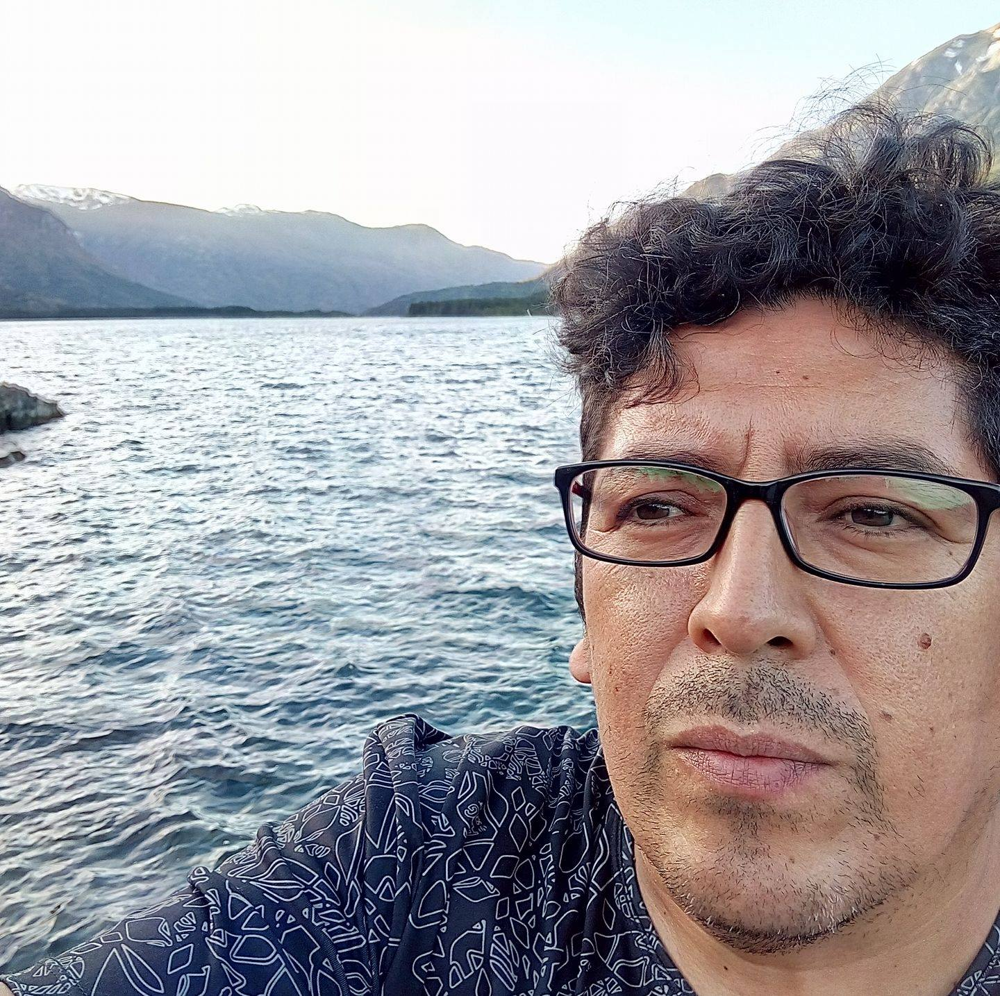

Calfuniarki
Crear es creer
Arte inmersivo · Humanidades Digitales · Desarrollo de apps con IA
El Bolsón, Patagonia Argentina

Sobre
Germán Burgos
Artista, investigador y desarrollador desde la Patagonia. Trabajo en la intersección entre la cosmovisión mapuche, las humanidades digitales decoloniales y la tecnología contemporánea.
Arte Inmersivo
AMUTUY — Memoria viva del bosque interior
Paisajes sonoros, performances rituales, video 360° y audio binaural para habitar la memoria del bosque patagónico.
Explorar →Investigación
Humanidades Digitales Decoloniales
Archivos inmersivos, memorias nativas y multimodalidad. Especialización y Maestría en Humanidades Digitales (UNTREF).
Explorar →Apps con IA
KimunAI · Momento Zen
Herramientas que combinan inteligencia artificial, simplicidad y propósito para resolver problemas cotidianos.
Explorar →Docencia
Educación secundaria, El Bolsón
Integración de tecnología y pensamiento crítico en el aula. Enseñar como acto creativo.
Explorar →Comunidad
LOF Proyecto Comunitario
Más de 20 años de trabajo social y comunitario en la Patagonia. Acompañamiento, territorio y construcción colectiva.
Explorar →